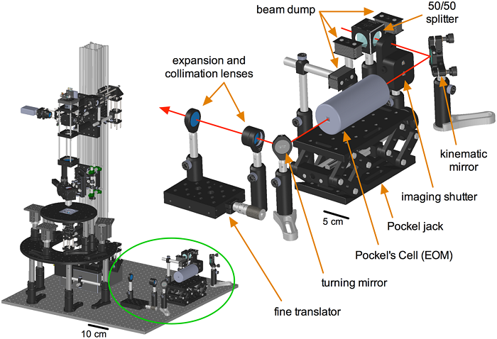

A DIY 2-Photon Microscope for $50k

Here's a fantastic publication on the plans for a open-source 2-photon by David Rosenegger, Cam Tran, Jeffery Ledue, Nin Zhou and Grant Gordon.
The parts list they include hits $60k, but also involves a lot of stuff you already have lying around, like a computer to control the system. When you take that kind of stuff away it hits $50k, and if you make some of the parts yourself that cost might go even lower.
The setup comes with 3 PMTs, and all the X-Y-Z control fanciness one could expect on a 2-photon.